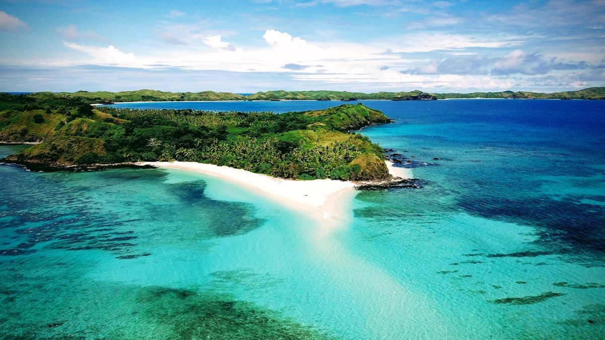
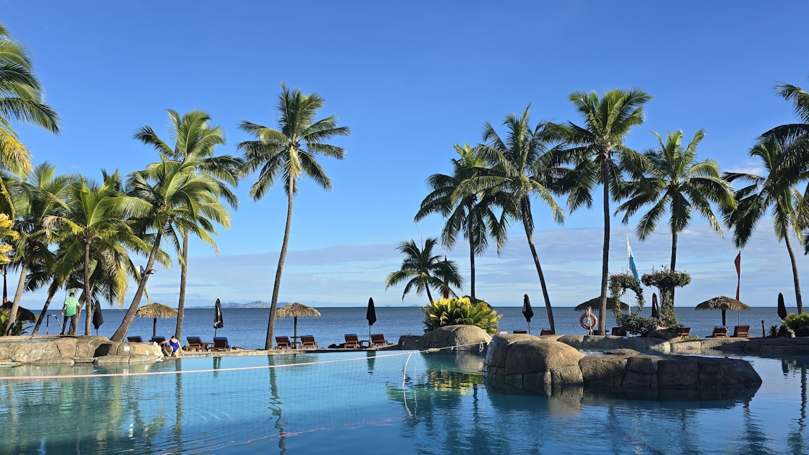
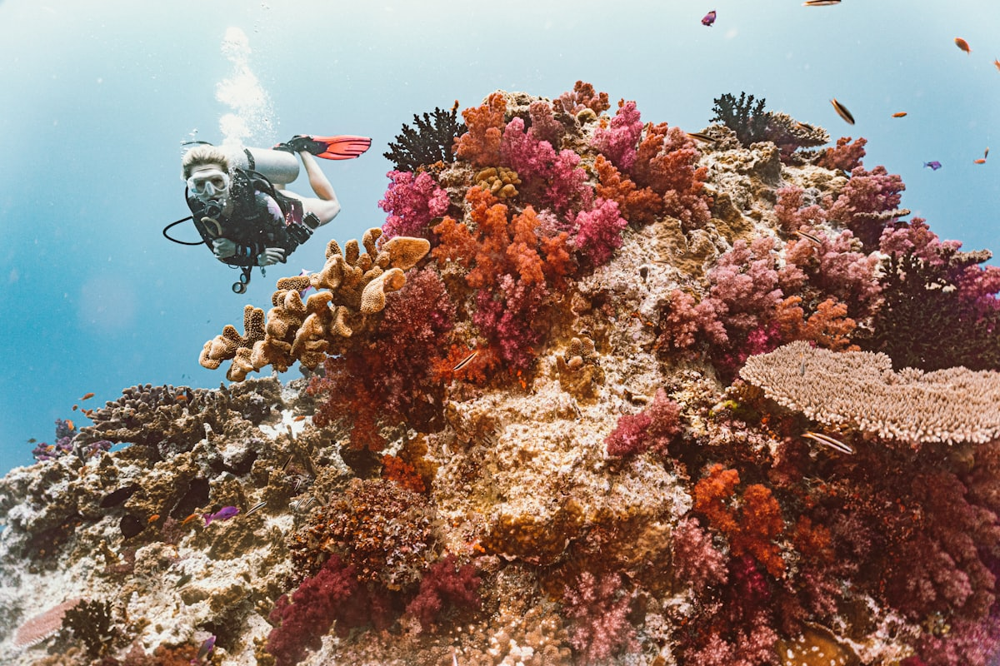
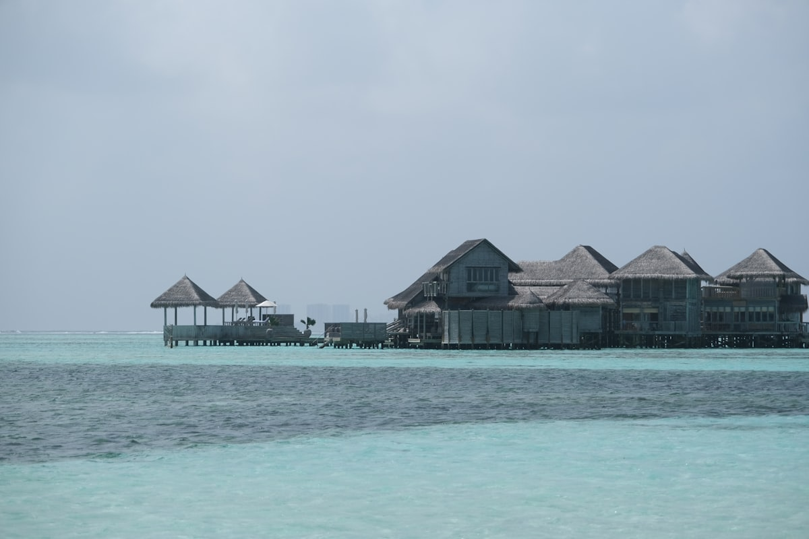
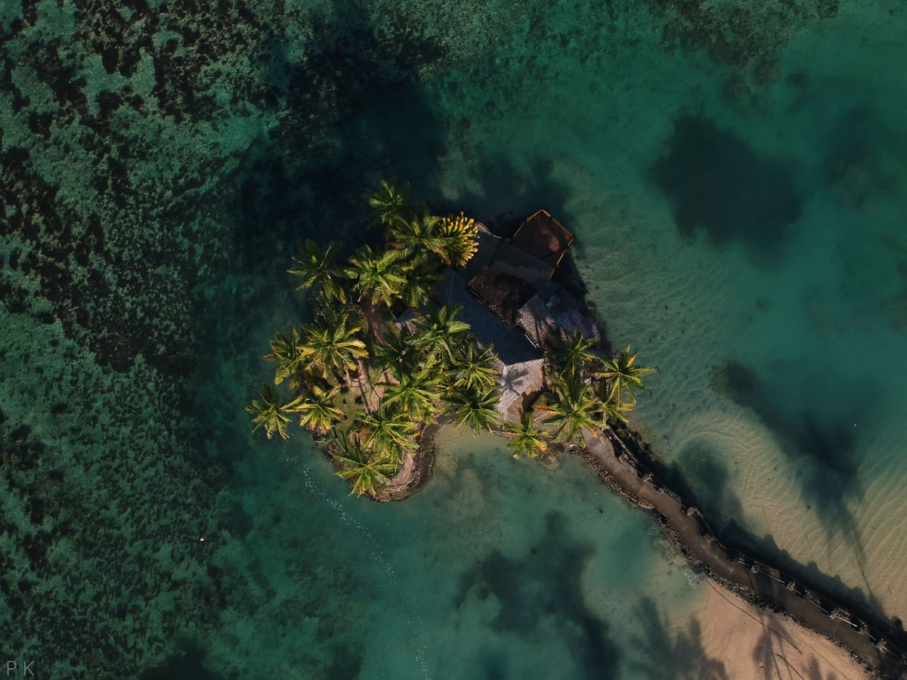
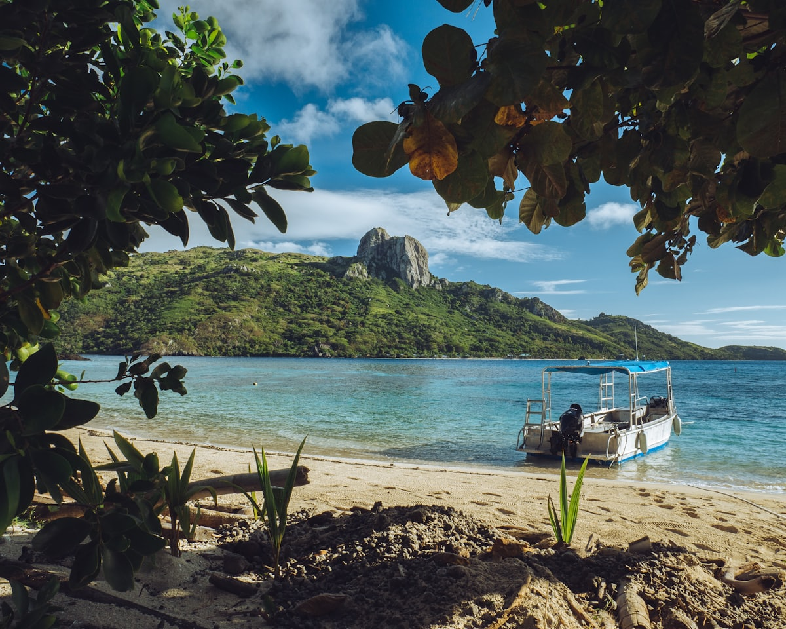
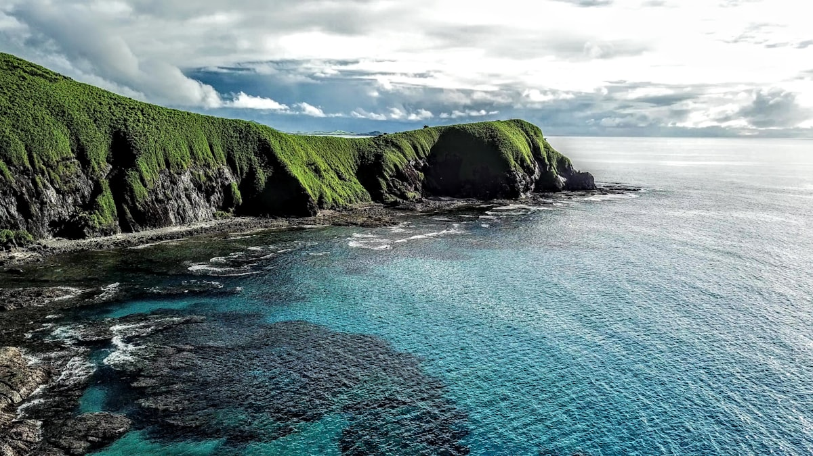
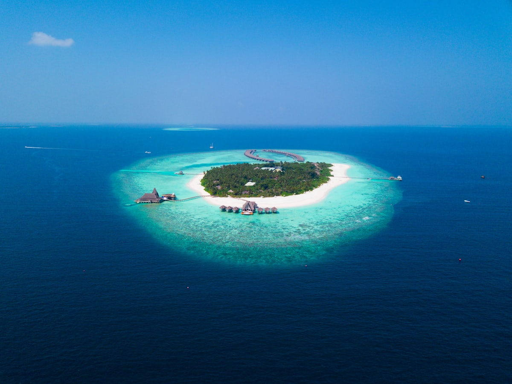

| 事项 | 结论 |
|---|---|
| 事项 | 结论 |
| 签证（最关键） | 中国护照免签 30 天，无需提前办签；入境只需填写入境卡（飞机上发），出关时核查返程机票与住宿 |
| 推荐方案 | 前 6 天：楠迪→丹娜努→亚萨瓦跳岛；后 4 天：珊瑚海岸→苏瓦→返程 |
| 时差与季节 | 斐济比北京快 4 小时（无夏令时）；5–10 月旱季最佳（少雨清凉），11–4 月雨季潮湿、2–3 月气旋风险高 |
| 电源 | 电压 240V，I 型三脚插座（同澳标，国内三角插头通用） |
| 货币与汇率 | 斐济元 FJD；1 元人民币 ≈ 0.3 斐济元，FJD 100 ≈ 330 元；外岛基本刷卡，楠迪市场备现金 |
| 跳岛交通 | 亚萨瓦跳岛用Bula Pass 船票（5 天约 FJD 603）+ Yasawa Flyer 双体船，2026 年 4 月起另收 FJD 20/人/班燃油附加费 |
| 预算（人均） | 经济 18000–26000 ／ 标准 30000–45000 ／ 舒适 65000–95000（人民币） |
| 着装提示 | 海滩泳装为主；进村庄与寺庙务必穿过膝衣物，斐济人重礼仪 |
以下为 10 天 9 晚的推荐节奏：前 6 天主玩海岛（楠迪→丹娜努→亚萨瓦跳岛），后 3 天回归主岛（珊瑚海岸→苏瓦），最后 1 天返程。每日主景点 ≤2 个，跳岛日以「住哪跳哪」为原则。
| 日期 | 行程 | 过夜地 | 主题 |
|---|---|---|---|
| D1 抵楠迪 | 北京出发经香港/新加坡中转抵达楠迪（全程约 16–20h），入住楠迪，海边晚餐 | 楠迪 | 抵达+预热 |
| D2 | 楠迪市区：睡巨人花园 → 印度庙 → 楠迪市场，午后转丹娜努岛度假村 | 丹娜努岛 | 主岛初探 |
| D3 | 丹娜努港 → 南海岛一日游（双体船 30min，浮潜+烧烤午餐） | 丹娜努岛 | 首座海岛 |
| D4 | 跳岛开始：丹娜努港乘 Yasawa Flyer 北上，登陆玛玛努卡群岛近端岛 | 玛玛努卡 | 跳岛启程 |
| D5 | 北上亚萨瓦群岛：瓦亚莱莱岛徒步观景台 + 海湾浮潜 | 亚萨瓦 | 原始海岛 |
| D6 | 亚萨瓦北部：蓝湖泻湖浮潜、鲨鱼湾看礁鲨、村庄卡瓦仪式 | 亚萨瓦 | 浮潜+人文 |
| D7 | 南下返程：跳岛船回丹娜努，转珊瑚海岸（约 2h 车程） | 珊瑚海岸 | 回归主岛 |
| D8 | 珊瑚海岸：希拉迪海滩 + 辛加托卡沙丘 + 库拉生态公园看斐济狐蝠 | 珊瑚海岸 | 沙丘+生态 |
| D9 | 沿皇后公路东行至首都苏瓦：斐济博物馆 + 市政厅 + 市场 | 苏瓦 | 首都人文 |
| D10 返程 | 苏瓦或楠迪✈北京（经香港/新加坡中转约 16–20h），到家休整 | — | 收尾 |
以下为 10 天全程的逐小时执行时间线，可当作「当天打开照着走」的清单。标注 ※ 的可选项视体力与天气取舍。
| 时间 | 事项 |
|---|---|
| 08:00–12:00 | 北京出发，经香港（约 3.5h）转斐济航空直飞楠迪（约 10h），或经新加坡（酷航）中转，全程 16–20h |
| 16:00–18:00 | 抵达楠迪国际机场：过海关+行李约 40 分钟，出关时出示返程机票与酒店订单 |
| 18:30–20:00 | 入住楠迪市区酒店（推荐 Wailoaloa 海滩区），换上夏装，海边酒吧晚餐 |
| 20:00–21:30 | 楠迪日落码头散步，机场取现金 + 买电话卡（Vodafone/Digicel 游客卡） |
| 21:30 | 早点休息（明天白天开始玩），时差仅 +4h 基本无感 |
| 时间 | 事项 |
|---|---|
| 08:30–10:30 | 睡巨人花园 Garden of the Sleeping Giant（成人约 FJD 40）：斐济最大兰花园区，原为影星雷蒙德·伯尔的庄园 |
| 11:00–12:30 | 斯里·苏布拉马尼亚庙（免费/捐款）：南半球最大印度教庙宇，彩色塔楼 |
| 12:30–13:30 | 午餐：楠迪市场附近印度咖喱/椰香海鲜 |
| 14:00–15:00 | 楠迪市场（免费）：热带水果、手工艺品、卡瓦粉，砍价从 6 折起 |
| 15:30–17:00 | 转移至丹娜努岛（车程 25min）入住度假村，泳池放松 |
| 18:30–20:30 | 晚餐：丹娜努码头海鲜餐厅（龙虾季便宜） |
| 时间 | 事项 |
|---|---|
| 08:00–08:45 | 度假村接驳车到丹娜努港 Port Denarau，South Sea Cruises 码头登船 |
| 09:00–09:45 | 高速双体船前往南海岛 South Sea Island（约 30–45min），玛玛努卡群岛近端 |
| 10:00–12:00 | 岛上自由：浮潜看软珊瑚与热带鱼、独木舟、透明玻璃底船（费用多含） |
| 12:00–13:30 | 岛上 BBQ 自助午餐（含酒水畅饮，一日游 FJD 179 起） |
| 13:30–16:00 | 下午继续浮潜/沙滩躺平，参加海星湾寻宝（可选） |
| 16:30–18:00 | 返程丹娜努港，码头看日落 |
| 时间 | 事项 |
|---|---|
| 08:00–08:45 | 丹娜努港登Yasawa Flyer（Awesome Adventures 双体船，08:45 开船），行李随身 |
| 09:00–10:30 | 沿途停靠玛玛努卡群岛各度假村码头，海景无敌 |
| 10:30–12:00 | 抵达瓦亚莱莱岛（约 1.5h 船程）或玛娜岛（近端），入住岛上海滩小屋（Beach Bure） |
| 12:00–13:30 | 岛上午餐（多为套餐 FJD 30–45） |
| 14:00–17:00 | 下午浮潜+皮划艇，参加村庄游览（卡瓦仪式约 FJD 46 起） |
| 18:30–20:00 | 岛上晚餐 + 篝火晚会（斐济歌手弹唱） |
| 时间 | 事项 |
|---|---|
| 08:00–09:00 | 早餐后乘船上行至瓦亚莱莱岛 Wayalailai 或纳维提岛 Naviti |
| 09:30–11:30 | 瓦亚莱莱观景台徒步（免费，往返约 2h）：俯瞰群岛碧绿泻湖，景色媲美明信片 |
| 12:00–13:30 | 岛上午餐 |
| 14:00–17:00 | 海湾浮潜：软珊瑚花园 + 小丑鱼，向导带看海龟（浮潜装备多数免费租） |
| 18:00–20:00 | 晚餐 + 星空下海滩散步（亚萨瓦是南太平洋少光害区） |
| 时间 | 事项 |
|---|---|
| 08:00–09:00 | 船上行至蓝湖泻湖 Blue Lagoon 区域（电影《蓝色珊瑚礁》取景地） |
| 09:30–11:30 | 鲨鱼湾浮潜（约 FJD 40–60）：礁鲨与鳐鱼环绕（向导带领，安全） |
| 12:00–13:30 | 蓝湖沙滩野餐午餐 |
| 14:00–16:00 | 蓝湖浮潜 + 珊瑚礁漫步（退潮时），或参加村庄卡瓦仪式（脱帽、盘腿、拍手礼节） |
| 18:30–20:00 | 岛上晚餐：洛沃地炉晚宴 Lovo（地下烧石烹制）可选 |
| 时间 | 事项 |
|---|---|
| 08:00–10:30 | 跳岛船南下返航，经玛玛努卡群岛回丹娜努港（约 2–3h） |
| 11:00–12:00 | 丹娜努港码头午餐 |
| 12:30–14:30 | 包车/出租车前往珊瑚海岸（车程约 2h，约 FJD 150–200），途经辛加托卡 |
| 15:00–17:00 | 入住珊瑚海岸度假村（推荐希拉迪海滩/库拉地区），泳池放松 |
| 18:30–20:00 | 海边餐厅晚餐：椰子鱼 Kokoda（生鱼椰奶腌渍） |
| 时间 | 事项 |
|---|---|
| 08:30–11:00 | 辛加托卡沙丘国家公园（成人约 FJD 20）：斐济唯一沙漠，30 米沙丘徒步+观海 |
| 11:30–12:30 | 午餐：珊瑚海岸海鲜餐厅 |
| 13:30–15:30 | 库拉生态公园 Kula Eco Park（成人约 FJD 45）：斐济狐蝠、吉里吉里蜥蜴、丛林漫步 |
| 16:00–18:00 | 希拉迪海滩游泳/浮潜（珊瑚海岸海水浅，适合新手） |
| 18:30 | 晚餐：沙滩 BBQ 或度假村自助 |
| 时间 | 事项 |
|---|---|
| 08:30–11:30 | 珊瑚海岸 → 苏瓦 Suva（皇后公路约 2.5h），沿途椰子园与印度裔村庄 |
| 12:00–14:00 | 斐济博物馆（成人约 FJD 20）：独木舟、卡瓦器具、斐济历史；午餐博物馆附近 |
| 14:30–16:30 | 苏瓦市政厅 + 阿尔伯特公园 + 苏瓦市场（周末集市热闹） |
| 17:00–18:00 | 苏瓦海堤日落散步（本地人聚集地） |
| 18:30–20:00 | 晚餐：苏瓦港口中餐厅/印度餐厅，饭后住苏瓦或返回珊瑚海岸 |
| 时间 | 事项 |
|---|---|
| 08:00–09:30 | 苏瓦/珊瑚海岸退房，包车回楠迪机场（苏瓦约 3h，珊瑚海岸约 2.5h） |
| 10:00–12:00 | 机场免税店补货（斐济水、椰子油、卡瓦粉纪念品），办理登机 |
| 13:00–16:00 | 楠迪✈香港（直飞约 10h），香港转机 |
| 16:30–22:00 | 香港✈北京（约 3.5h），跨日到家休整 |
必去（必去）/ 顺路（顺路）/ 可跳过（可跳过）。

必去
必去
顺路
必去
必去
顺路
顺路图片为 Unsplash 主题图（亚萨瓦海滩、丹娜努度假村、珊瑚礁浮潜、水上屋、玛玛努卡群岛、跳岛船、珊瑚海岸、苏瓦等均为斐济实景或同主题示意图），用于页面配图。更多免费景点：睡巨人花园、楠迪市场、苏瓦市场、辛加托卡沙丘、希拉迪海滩。
点击左侧节点可在地图上定位；点击地图 marker 会高亮对应节点。坐标为 WGS-84 转 GCJ-02 纠偏后标注。
以下为单人、不含购物的估算，人民币计价；出发地基准北京。汇率按 1 元 ≈ 0.3 斐济元（FJD 100 ≈ 330 元）。往返机票按经香港/新加坡中转 7000–10000 元计，旺季（12–2 月）上浮。
| 项目 | 经济（18000–26000） | 标准（30000–45000） | 舒适（65000–95000） |
|---|---|---|---|
| 往返机票 | 经香港/新加坡中转 7000–8500 | 直飞段+好时段 9000–12000 | 商务舱/直飞 18000–25000 |
| 住宿（9 晚） | 楠迪旅馆+茅草屋 400–700/晚 | 度假村 1200–2500/晚 | 水屋/五星度假村 4000–8000/晚 |
| 交通（跳岛+包车） | Bula Pass 5 天 2000–2500 | Bula Pass 7 天 + 包车 3500–4500 | 含水上飞机/直升机接驳 9000–15000 |
| 门票与活动 | 浮潜+博物馆约 800–1200 | 鲨鱼湾+沙丘+生态园 2000–3000 | 潜水证/跳伞/水屋体验 6000–10000 |
| 餐饮（10 天） | 市场+快餐 1500–2000 | 正常下馆子 3000–4500 | 度假村全包餐+龙虾 8000–12000 |
斐济唯一水上屋里库里库（Likuliku，仅 10 间，FJD 2000+/晚含全餐）：丹娜努港上船约 40min，水屋阳台直下海浮潜，含管家与双人按摩。预算 6 万+；至少提前 3 个月预订。跳岛可砍，节奏换成 2 个度假村切换。
带娃推荐丹娜努岛度假村连住（希尔顿有儿童俱乐部）+ 南海岛/玛娜岛短船程一日游 + 库拉生态公园看狐蝠。亚萨瓦远岛船程 3h+ 且住宿简单，不适合低龄儿童；斐济酒店儿童加床普遍免费，部分度假村 12 岁以下儿童免费。
| 方式 | 时长 | 参考价 | 备注 |
|---|---|---|---|
| 经香港中转（推荐） | 北京✈香港 3.5h + 香港✈楠迪 10h，全程约 16–18h | 往返 8000–12000 元 | 国泰/斐济航空 FJ392，香港直飞楠迪为唯一较省时的走法 |
| 经新加坡中转 | 北京✈新加坡 6h + 新加坡✈楠迪 10h，全程约 18–20h | 往返 7000–10000 元 | 酷航/新航，转机停留可选新加坡一日 |
| 境内接驳 | 楠迪—苏瓦约 3h / 楠迪—珊瑚海岸约 2h | 包车 FJD 150–250 | 出租车/包车为主，机场—丹娜努 FJD 30–40 |
| 区域 | 价格/晚 | 优点 | 短板 |
|---|---|---|---|
| 楠迪·Wailoaloa 海滩 | 经济 400–800 | 机场近，海鲜餐厅多 | 海滩一般 |
| 丹娜努岛度假区 | 标准 1200–2500 / 舒适 4000+ | 设施全，跳岛码头近 | 旺季一房难求 |
| 亚萨瓦·沙滩小屋 | 经济 400–800（含餐） | 原始海岛，性价比高 | 设施简单，补给少 |
| 亚萨瓦·度假村 | 标准 1500–3000 | 全包省心，浮潜免费 | 位置偏远 |
| 珊瑚海岸·希拉迪/库拉 | 标准 800–1800 | 安静海滩，回程缓冲 | 餐馆选择少 |
| 苏瓦市区 | 标准 500–1000 | 人文集中，市场热闹 | 夜间治安一般 |